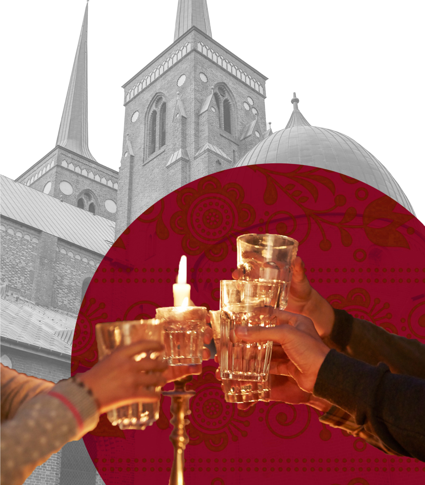

DANISH
Treasures
A Cultural Tapestry
From Viking history to modern design, uncover the unique blend of tradition and innovation that defines Danish culture."

From Viking history to modern design, uncover the unique blend of tradition and innovation that defines Danish culture."
Easter in Denmark blends tradition with springtime cheer. Though the date fluctuates, Easter week consistently marks the opening of Tivoli amusement park. Family Easter lunches are a highlight, featuring elaborately decorated eggs, hunts, and playful egg-rolling competitions.
Midsummer festival of Saint Hans The height of Danish summer is celebrated on the evening of June 23 under the name Sankt Hans (Saint Hans), who is known in English as John the Baptist. The festival of Sankt Hans and the celebration of the summer solstice have pagan roots and date back to the days before Christianity came to Denmark. Sankt Hans is generally celebrated with a dinner at home with family and friends followed by a stroll to a community bonfire, often by the beach, in a park, or on the shore of one of Denmark's many lakes. There are speeches, and as the bonfire burns, the community sings the song "Midsommervisen", written by the Danish poet Holger Drachmann in 1885.

In February, Danish children celebrate 'Fastelavn'. This children's holiday involves dressing up in costumes and usually ends with the children trying to smash open a hanging cask called the "cat barrel". Fortunately, these days the barrel contains only candy. The girl or boy who manages to break open the barrel becomes the Kat Queen or Kat King of the festival.